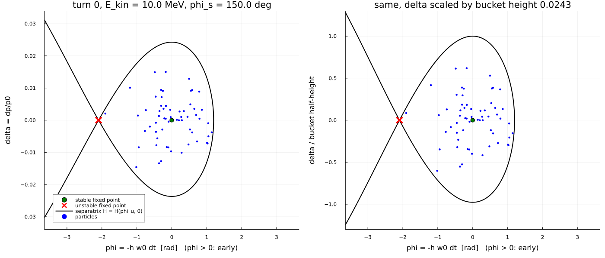
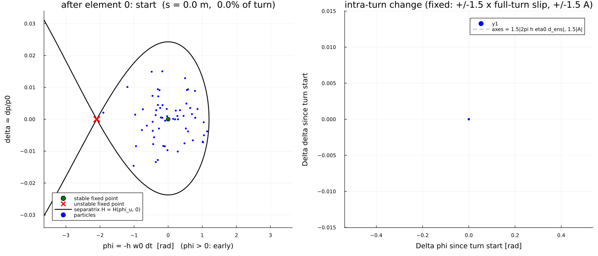

Longitudinal motion from the ring average
From the 6D Hamiltonian to a 2D synchrotron Hamiltonian
Over one turn the magnetic lattice advances $(l,\delta)$ through the element Hamiltonians. The slip coefficients $\eta_0,\eta_1$ are those of the time of flight. A thin RF kick changes $\delta$ at fixed arrival time. Coarse-graining to one map per turn in the variables $(\phi,\delta)$ with $\phi=-h\omega_0\Delta t$ gives
\[\begin{aligned} \phi_{n+1}&=\phi_n-2\pi h\bigl(\eta_0\delta_{n+1}+\eta_1\delta_{n+1}^2+\cdots\bigr),\\ \delta_{n+1}&=\delta_n+A\bigl(\sin(\phi_s+\phi_n)-\sin\phi_s\bigr),\qquad A=\frac{ZVT}{\beta_0^2 E_0}. \end{aligned}\]
Treating the turn number as continuous yields the smooth Hamiltonian
\[H(\phi,\delta)=-2\pi h\Bigl(\frac{\eta_0\delta^2}{2}+\frac{\eta_1\delta^3}{3}\Bigr) +A\bigl(\cos(\phi_s+\phi)+\phi\sin\phi_s\bigr),\]
which is the average of the full 6D dynamics over one revolution under the assumptions of a single RF station, no transverse–longitudinal coupling in the averaged equations, and $\delta$ small enough that the closed-orbit expansion of the path length converges. Fixed points on $\delta=0$: stable $\phi=0$, unstable $\phi_u=\pi-2\phi_s$. The separatrix is the level set $H=H(\phi_u,0)$; the RF bucket is the region around the origin inside it. Stability requires $\eta_0\cos\phi_s>0$.
Small-amplitude synchrotron tune:
\[Q_s=\sqrt{\frac{h\,\eta_0\,ZVT\cos\phi_s}{2\pi\beta_0^2 E_0}} \qquad\text{(smooth)},\qquad \cos(2\pi Q_s^{\mathrm{kick}})=1-\tfrac12(2\pi Q_s)^2 \qquad\text{(one kick/turn)}.\]
Element-by-element view of one turn
Left: absolute $(\phi,\delta)$ with the analytic separatrix. Right: change relative to the turn start, with fixed axes set by lattice/RF scales —
- horizontal: $\pm 1.5\,|2\pi h\eta_0|\,\delta_{\mathrm{ens}}$ (full-turn phase-slip scale for the largest $|\delta|$ in the ensemble);
- vertical: $\pm 1.5\,A$ (RF kick amplitude).
Only the cavity changes $\delta$ within a turn; $\phi$ changes continuously through path length and velocity.

